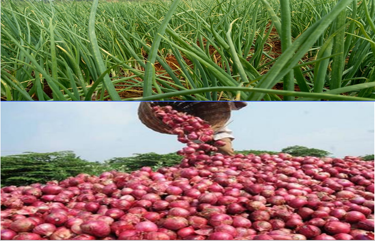

የውጊያ ቴክኒክ ትምህርት ቤት የሰራዊቱን ሁለንተናዊ አቅም ከመገንባት ጎን ለጎን፣ በምግብ ዋስትና ራሱን ለመቻልና የወጪ ጫናን ለመቀነስ በልማት ዘርፍ አመርቂ ሥራዎችን እያከናወነ ይገኛል። ትምህርት ቤቱ ሰፊ የመስኖ ልማት መሠረተ-ልማቶችን በመዘርጋት የሽንኩርት፣ የቲማቲምና የልዩ ልዩ აትክልቶች ምርትን በከፍተኛ ጥራትና በብዛት ማምረት ችሏል። ይህ ተግባር በተቋሙ ውስጥ የሚገኙ አባላትንና ሰልጣኞችን የዕለት ተዕለት የምግብ አቅርቦት በራስ አቅም በበቂ ሁኔታ ለመሸፈን ትልቅ ሚና እየተጫወተ ያለና ይበልጥ ተጠናክሮ የሚቀጥል ታላቅ ስኬት ነው። የአዋሽ ውጊያ thኒክ ት/ቤት፤ የሚገኝበት አካባቢ እጅግ ሞቃታማ የአየር ፀባይ እንደመሆኑ መጠን 2013 +ቋቁሞ ለመስራትና ሰብዓዊም ሆነ ቁሳዊ ሃብቱን ጤናማ በሆነ ሁኔታ መንከባከብ እንዲቻል ከስልጠናው ጎን ለጎን ቅድሚያ ተሰጥቶት ሲሰራ የነበረው የአካባቢውን ስነ-ምህዳር ለመቀየርየተሰሩ ስራዎች ናቸው፡፡ ት/ቤቱ ከተመሰረተበት ጊዜ አንስቶ በርካታ ስራዎችን ያከናወነ ሲሆን የት/ቤቱን ማሀበረሰብ እና በየጊዜው ለስልጠና የሚመጡ ሰልጣኞችን በማስተባበር በመኖሪያ ቤቶች፣ በማስተማሪያ ክፍሎች፣ በመንገድ ዳሮችና ከፍት ቦታዎች ዙሪያውን የጥላ ዛፎች እንዲተከሉ በማድረግ እና ተንከባክቦ በማሳደግ እንደ ት/ቤቱ በሀል በመቁጠር ማንኛውም አዳዲስ መሰረተ-ልማቶች ሲገነቡ ይህን አረንጓዴ ልማት በተጓዳኝ በማስቀጠል እካባቢውን ለኑሮ ምቹ የማድረግ ስራ ተሰርቷል፤ ኡሁንም በመሰራት ላይ ይገኛል፡፡ በተጨማሪም መከላከያ እንደ ተቋም የአረንጓዴ አሻራ መርሃግብር ሰራዊቱ በሚኖርበት አካባቢ ባሉት ይዞታዎች እንዲፈፀም ባስቀመጠው አቅጣጫ መሰረት የት/ቤቱ አመራርም ከፍተኛ ያለውን የመሬት እና የውኃ አቅርቦት ምቼ ሁኔታ በመጠቀም ለምግብነት የሚያገለገሉ እንደ ዘይቱን! ማንጎ፣ አፕል፣ ፓፓያ፣ ሙዝ፣ ቡና የመሳሰሉ ቋሚ ተክሎችና የጓሮ አትክልቶች እንደ ሽንኩርት፣ ሰላ! ቆሥ፣ ካሮት፣ ሃባብ የመሳሰሉትን በማልማት ላይ የሚገኝ ሲሆን ምንም እንኳ ባሳለፍናቸው ዓመታት በውስን ቦታ ብቻ የመዝናኛ ክበቡ እያለማ ለበርካታ ዓመታት ት/ቤቱ ተጠቃሚ ቢሆንም አሁን ግን በት/ቤቱ የሚገኙ የስልጠና ዲፓርትመንቶች እና ዘርፎች ያለውን ሥራ በስፋት በማልማት በተወሰነ መልኩ የሰራዊቱን የምግብ ፍጆታ ለመሸፈን እየተሰራ ነው፡፡